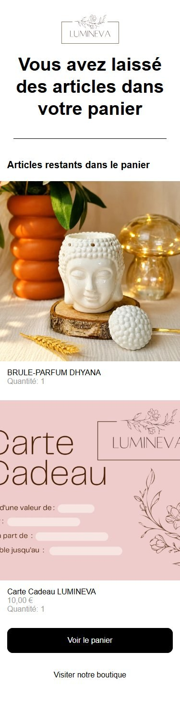

La question
La décision à prendre, posée en une phrase.
Que rapportent les relances de panier et de paiement, et peut-on faire mieux ?
Constat 2 de « Choix et données ». La gérante souhaite une relance de panier abandonné (FAQ). Deux relances partent déjà seules : on regarde ce qu’elles rapportent et où elles perdent des clients.
L’hypothèse
Ce qu’on pense avant de calculer : c’est ce qu’on va vérifier.
Un e-mail déclenché par un panier laissé rapporte plus qu’une newsletter envoyée à tous.
Le client a déjà montré son intérêt : il est donc plus facile à convaincre qu’un abonné à qui l’on écrit sans raison particulière. Et un seul mail laisse sans rappel ceux qui ne l’ouvrent pas.
Le périmètre
Qui et combien on compte : les données utilisées.
722 e-mails de relance (271 panier, 451 paiement) contre 15 665 newsletters.
Voir les mails que reçoit le client aujourd’hui

271 envois · 4 commandes

451 envois · 3 commandes
26 envois · 0 commande
Le test
Comment on vérifie qu’un écart est réel et pas dû au hasard.
Test exact de Fisher sur les commandes par e-mail envoyé ; intervalle de Poisson exact du taux des relances.
Test 1 · Relances contre newsletters : test exact de Fisher
Le test mélange tous les cas et compte la part des mélanges qui donneraient un écart au moins aussi grand que celui observé (0,97 % contre 0,11 %).
Écart réel. Une relance rapporte environ 9 fois plus qu’une newsletter.
Test 2 · La plage plausible du taux : intervalle de Poisson exact
Comment lire la valeur p ?
La valeur p est la chance de voir un tel écart si relances et newsletters rapportaient autant. Sous 5 %, l’écart est réel. Le rapport × 9 va de 4 à 22 : même au plus prudent, c’est 4 fois plus.
L’effet
Ce que montrent les chiffres : la taille de l’écart et son incertitude.
0,97 contre 0,11 commande pour 100 e-mails : une relance rapporte environ 9 fois plus qu’une newsletter.
- Relance panier1,48
- Relance paiement0,67
- Newsletters0,11
Une relance rapporte 9 fois plus qu’une newsletter
0,97 contre 0,11 commande pour 100 e-mails (p < 0,001).
Près d’un client sur deux n’ouvre pas le mail
Les deux relances sont ouvertes par environ la moitié des destinataires seulement : un seul mail laisse l’autre moitié sans rappel.
Mail de paiement : la plupart des clics vont à l’accueil
Seulement 3 clics vers le paiement : le lien « Visiter notre boutique » détourne peut-être des clients.
Le flux « navigations » est cassé
E-mail en brouillon avec erreurs, 0 commande ; trois anciens flux inactifs traînent aussi.
Le chiffre
Ce que ça vaut en euros.
Aujourd’hui : 7 commandes, 842 €. Avec les nouveaux mails : 0,3 à 2,6 commandes par an, soit 18 à 162 € de chiffre d’affaires (hypothèse, voir le bilan dans Recommandations).
Un ordre de grandeur, pas une prévision.
D’où vient chaque nombre ?
- Volume (268 e-mails de plus par an) : 722 e-mails de relance sur 16 mois, soit 542 par an ; 49 % ne sont pas ouverts : le 2e mail leur est destiné (542 × 49 %).
- Taux bas (0,11) : les newsletters ont rapporté 17 commandes pour 15 665 e-mails.
- Taux haut (0,97) : les relances ont rapporté 7 commandes pour 722 e-mails.
- Pourquoi ces deux taux ? Aucun des nouveaux mails n’a été testé : on prend comme bornes les deux taux mesurés dans la boutique, celui des newsletters (bas) et celui des relances (haut).
- Panier moyen (62 €) : 99 629 € de chiffre d’affaires ÷ 1 595 commandes.
- Marge : 50 % sur les bougies, 36 % à 50 % estimé sur l’ensemble des produits.
La décision
Ce qu’on décide, et ce qui ferait changer d’avis.
Ajouter un 2e mail, tester le 3e. Elles rapportent 9 fois plus qu’une newsletter, mais très peu en valeur : un seul mail par situation, un flux cassé, trois anciens flux inutiles. Elles peuvent faire mieux.
Des mails de relance plus complets
Pourquoi ces délais, ces nombres de mails et ce code de 5 € ?
Mail 1 : un premier rappel
Le client a encore son panier en tête. Un rappel simple, sans offre.
Hypothèse le délai
Mail 2 : on rattrape ceux qui n’ont pas ouvert
Environ 49 % des destinataires n’ouvrent pas la relance actuelle. Le lendemain, un 2e mail les rattrape, avec les avis clients et les conditions de livraison.
Démontré la part qui n’ouvre pas · Hypothèse le délai
Mail 3 : à tester
Dernière chance, avec 5 € offerts, seulement si le panier fait au moins 50 €. Aucune donnée ne dit si un 3e mail aide : on commence par 2 mails et on teste le 3e.
Hypothèse l’effet
Pour que la remise reste raisonnable. D’après la marge qui nous a été communiquée (50 % sur les bougies, 36 % à 50 % estimé sur l’ensemble des produits), un panier de 50 € laisse 18 à 25 € de marge : les 5 € en représentent 20 à 28 %. En dessous de 50 €, la remise mangerait trop de marge. Repère : le panier médian d’une 1re commande est de 49,7 €, et le code de bienvenue coûte déjà 6,14 € en moyenne par commande.
Et les 49 % qui n’ouvrent pas ? Des objets plus « Lumineva »
Objet : « Vous avez laissé des articles dans votre panier »
Aperçu : aucun
Objet : « Ta bougie t’attend… elle va fondre d’impatience 🕯️ »
Aperçu : « Elle est toujours dans ton panier : on te la garde au chaud. »
Objet : « Votre panier est prêt pour le paiement »
Aperçu : aucun
Objet : « Plus qu’une étincelle avant ta bougie ✨ »
Aperçu : « Ta commande est presque finie. »
Pourquoi ces objets, et comment les tester ?
Son mail de bienvenue automatique (« 🕯️ Tu viens d’entrer dans les coulisses… », tutoiement, emoji) est ouvert à 71 % (320 envois), contre 53 % et 49 % pour les relances, et 38 % en moyenne pour ses newsletters.
À lire avec prudence : le mail de bienvenue est attendu (le client vient de s’inscrire) et n’a donné aucune commande. Ce n’est pas une preuve, c’est une piste à tester.
Comment le tester, par rapport à ce qu’elle faisait avant ? Les taux actuels (53 % et 49 %) servent de référence. On change l’objet et l’aperçu, puis on relève l’ouverture dans Shopify Messaging chaque mois. Pour voir de façon fiable une hausse de 53 % à 70 % (le niveau de son mail de bienvenue), il faut environ 127 envois par version (calcul standard, risque 5 %, puissance 80 %) : au rythme actuel, plusieurs mois. On lit donc la tendance sans conclure sur un seul mois. Les ouvertures sont aussi gonflées par certaines messageries : on regarde en parallèle les clics.
Navigation : sait-on ce qu’un inscrit a vu ?
Non, rien ne l’enregistre dans nos données. Aucune étiquette ni aucun Flow ne note les produits regardés par un inscrit. Le mail de navigation (brouillon, 26 envois, 0 commande) s’appuie sur la fonction « abandon de navigation » de Shopify : il montre le produit regardé, mais seulement pour un visiteur que la boutique a pu identifier (client connecté ou qui a déjà laissé son e-mail).
D’après un guide tiers, Flow propose un déclencheur « le client a quitté la boutique sans achat » de type navigation ; nous n’avons pas trouvé de déclencheur « produit consulté » dans la documentation officielle. À vérifier dans la boutique : ouvrir le flux dans Messaging, Automatisations, et regarder quelles données le mail utilise. Si ce n’est pas assez, une application de suivi des produits regardés existe (payante).
Un 2e mail sans clic ni commande après 150 envois (environ 7 mois) : on le retire.
Limites et ce qui manque
- Aucune donnée ne mesure le meilleur délai entre deux mails : nos délais sont des propositions à tester.
- Les 7 commandes sont peu nombreuses : le taux est très incertain (l’écart avec les newsletters va de 4 à 22 fois).
- Les commandes rattachées à un mail sont celles que Shopify relie à un clic : une commande passée après une ouverture sans clic n’est pas comptée.
Le code
q4_approfondi.py ·
# encoding: utf-8
"""Approfondissement (15/11/2026) des trois questions d'automatisation et de la formation.
Aucune donnée personnelle : comptes, taux et montants agrégés. Tout vient de orders.csv, customers.csv et du bilan e-mailing (fichiers JSON du prof).
A. Relance après la 1re commande : taux de retour en fenêtre fixe, retours un jour de pointe, qui revient (par groupe)
B. Relances panier et paiement : entonnoir de chaque e-mail, comparaison aux newsletters, résultats des newsletters par thème
C. Lancement et retour en stock : les jours de pointe et les e-mails envoyés avant, heures de commande, expéditions
D. Formation : produit par produit, prix et remises, vague par vague, part du chiffre d'affaires"""
import csv, json, glob, os, collections, math, statistics
from datetime import datetime, timedelta
from scipy import stats
from common import charger, REF, famille
cmds, clients = charger()
cm = {r['customer_key'].strip(): r for r in csv.DictReader(open('../DONNEES/customers.csv', encoding='utf-8'))}
BIL = '../DONNEES/bilan_emailing/'
EM = [json.load(open(f, encoding='utf-8')) for f in sorted(glob.glob(BIL + '1*.json'))]
out = {}
def fisher(a, na, b, nb):
"""a/na contre b/nb (succès / effectif) : test exact de Fisher"""
return float(stats.fisher_exact([[a, na - a], [b, nb - b]])[1])
# =================================================================== A. RELANCE APRÈS LA 1re COMMANDE
def fenetre(T, filtre=lambda k: True):
el = [k for k, v in clients.items() if (REF - v[0]['dt']).days >= T and filtre(k)]
ret = [k for k in el if len(clients[k]) > 1 and (clients[k][1]['dt'] - clients[k][0]['dt']).days <= T]
return {'suivis': len(el), 'ont_recommande': len(ret), 'taux': 100 * len(ret) / len(el) if el else None}
out['fenetres'] = {str(T): fenetre(T) for T in (30, 45, 60, 90, 120, 180)}
tot1 = sorted(v[0]['total'] for v in clients.values()); med_panier = tot1[len(tot1) // 2]
seg = {
'Accepte les e-mails marketing': lambda k: cm.get(k, {}).get('Accepts Email Marketing') == 'yes',
'1re commande avec le code de bienvenue': lambda k: clients[k][0]['code'] == 'BIENVENUE10',
'1re commande d’au moins la médiane (' + str(round(med_panier)) + ' €)': lambda k: clients[k][0]['total'] >= med_panier,
'1re commande avec une bougie gourmande': lambda k: 'Bougies gourmandes' in clients[k][0]['familles'],
'Livraison dans les Pyrénées-Atlantiques': lambda k: clients[k][0]['cp'][:2] == '64',
}
segs = []
for nom, f in seg.items():
oui, non = fenetre(90, f), fenetre(90, lambda k, f=f: not f(k))
segs.append({'groupe': nom, 'oui': oui, 'non': non, 'p': fisher(oui['ont_recommande'], oui['suivis'], non['ont_recommande'], non['suivis'])})
out['segments_90j'] = segs
PICS = sorted(d for d, k in collections.Counter(o['date'] for o in cmds).items() if k >= 20)
out['pics'] = PICS
tous = [o for v in clients.values() for o in v]
r2 = [o for o in tous if o['rang'] == 2]; r2plus = [o for o in tous if o['rang'] >= 2]
out['retours_jour_pointe'] = {'commandes_totales': len(cmds), 'part_pics_toutes': 100 * sum(1 for o in cmds if o['date'] in PICS) / len(cmds),
'deuxiemes': len(r2), 'deuxiemes_pics': sum(1 for o in r2 if o['date'] in PICS),
'rang2plus': len(r2plus), 'rang2plus_pics': sum(1 for o in r2plus if o['date'] in PICS),
'premieres': sum(1 for o in tous if o['rang'] == 1), 'premieres_pics': sum(1 for o in tous if o['rang'] == 1 and o['date'] in PICS)}
# délai entre la 1re et la 2e commande : répartition (parmi ceux qui ont recommandé)
dl = [(v[1]['dt'] - v[0]['dt']).days for v in clients.values() if len(v) > 1]
bornes = [(0, 30), (30, 45), (45, 60), (60, 90), (90, 180), (180, 999)]
out['delais_2e'] = {'n': len(dl), 'tranches': [{'a': a, 'b': b, 'n': sum(1 for d in dl if a <= d < b)} for a, b in bornes]}
# =================================================================== B. RELANCES PANIER ET PAIEMENT, NEWSLETTERS
def fiche(e):
k, c = e['kpi'], e.get('contenu') or {}
return {'id': e['id'], 'objet': e['objet'], 'type': e['type'], 'liste': e['destinataires'], 'date': e['date'], 'theme': c.get('theme'),
'envoyes': k['emails_envoyes'], 'ouverture': k['taux_ouverture'], 'clic': k['taux_clic'], 'visites': k['visites'], 'commandes': k['commandes'],
'ventes': k['ventes_totales'], 'panier_moyen': k['panier_moyen'], 'entonnoir': k['entonnoir'], 'liens': e['liens'], 'cta': [x['texte'] for x in c.get('cta', [])],
'offre': c.get('offre'), 'image': e['image']}
F = [fiche(e) for e in EM]
out['emails'] = F
flux = {f['id']: f for f in F if f['type'] == 'automatisation'}
news = [f for f in F if f['type'] == 'newsletter']
boutique = [f for f in news if f['liste'] == 'Tous les abonnés']
# comparaison à nombre égal d'e-mails : newsletters de la boutique (liste « Tous les abonnés »)
def agr(L):
env = sum(f['envoyes'] for f in L)
return {'n': len(L), 'envoyes': env, 'commandes': sum(f['commandes'] for f in L), 'ventes': sum(f['ventes'] for f in L), 'visites': sum(f['visites'] for f in L),
'cmd_100': 100 * sum(f['commandes'] for f in L) / env if env else None, 'ventes_1000': 1000 * sum(f['ventes'] for f in L) / env if env else None,
'visites_100': 100 * sum(f['visites'] for f in L) / env if env else None}
out['themes'] = {t: agr([f for f in boutique if f['theme'] == t]) for t in sorted({f['theme'] for f in boutique})}
out['boutique'] = agr(boutique)
out['relances'] = agr([flux['191033671947'], flux['191033737483']])
out['formation_listes'] = agr([f for f in news if f['liste'] == 'Client intéressé par la formation'])
out['ouverture_moy_boutique'] = sum(f['ouverture'] * f['envoyes'] for f in boutique) / sum(f['envoyes'] for f in boutique)
out['clic_moy_boutique'] = sum(f['clic'] * f['envoyes'] for f in boutique) / sum(f['envoyes'] for f in boutique)
# =================================================================== C. LANCEMENT ET RETOUR EN STOCK
dnews = sorted(datetime.strptime(e['date'][:10], '%Y-%m-%d') for e in json.load(open(BIL + 'inventaire.json', encoding='utf-8'))['newsletters'])
dnews_all = [(datetime.strptime(e['date'][:16], '%Y-%m-%d %H:%M'), e['objet_liste']) for e in json.load(open(BIL + 'inventaire.json', encoding='utf-8'))['newsletters']]
pk = []
for d in PICS:
dd = datetime.strptime(d, '%Y-%m-%d')
avant = [x for x in dnews if x <= dd]
jours = (dd - avant[-1]).days if avant else None
os_ = [o for o in cmds if o['date'] == d]
h = collections.Counter(o['dt'].hour for o in os_)
pk.append({'date': d, 'commandes': len(os_), 'derniere_newsletter_jours': jours, 'newsletter_le_jour': any(x.date() == dd.date() for x, _ in dnews_all),
'heures': {str(k): h[k] for k in sorted(h)}, 'avant_10h': sum(1 for o in os_ if o['dt'].hour < 10), 'de_10h_a_12h': sum(1 for o in os_ if 10 <= o['dt'].hour < 12),
'apres_12h': sum(1 for o in os_ if o['dt'].hour >= 12), 'clients_connus': sum(1 for o in os_ if o.get('rang', 0) >= 2)})
out['pics_detail'] = pk
# le 20 septembre 2026 : commandes avant et après l'envoi de la newsletter de 10 h 02
env = datetime(2026, 9, 20, 10, 2)
o20 = [o for o in cmds if o['date'] == '2026-09-20']
out['jour_newsletter_20_9'] = {'avant': sum(1 for o in o20 if o['dt'] < env), 'apres': sum(1 for o in o20 if o['dt'] >= env),
'apres_heure_suivante': sum(1 for o in o20 if env <= o['dt'] < env + timedelta(hours=2)),
'avec_psl': sum(1 for o in o20 if any('PUMPKIN SPICE LATTE' in l['nom'].upper() for l in o['lignes']))}
# semaine moyenne : combien de commandes par jour hors pics (pour comparer)
jours_actifs = collections.Counter(o['date'] for o in cmds)
out['jour_moyen'] = {'commandes_par_jour_hors_pics': sum(k for d, k in jours_actifs.items() if d not in PICS) / (len(jours_actifs) - len(PICS)), 'jours_avec_commande': len(jours_actifs)}
# =================================================================== C bis. RÉSEAUX SOCIAUX AUTOUR DES JOURS DE POINTE (publications Instagram et Facebook)
def posts(f, reseau):
out_ = []
for r in csv.DictReader(open(f, encoding='utf-8')):
d = datetime.strptime(r['Heure de publication'], '%m/%d/%Y %H:%M')
out_.append({'reseau': reseau, 'dt': d, 'vues': int(r['Vues'] or 0), 'texte': (r['Description'] or '').replace('\n', ' ').strip()})
return out_
PO = posts('../DONNEES/instagram_publications.csv', 'Instagram') + posts('../DONNEES/facebook_publications.csv', 'Facebook')
MOTS = ('en ligne', 'sortira', 'collection', 'dévoile', 'dévoil', 'de retour', 'disponible')
res = []
for d in PICS:
dd = datetime.strptime(d, '%Y-%m-%d')
fen_ = [x for x in PO if dd - timedelta(days=3) <= datetime(x['dt'].year, x['dt'].month, x['dt'].day) <= dd]
ig = [x for x in fen_ if x['reseau'] == 'Instagram']
ann = sorted([x for x in fen_ if any(m in x['texte'].lower() for m in MOTS)], key=lambda x: x['dt'])
res.append({'date': d, 'ig_posts': len(ig), 'ig_vues': sum(x['vues'] for x in ig), 'ig_max': max([x['vues'] for x in ig] or [0]),
'annonces': [{'reseau': x['reseau'], 'quand': x['dt'].strftime('%d/%m %H:%M'), 'jour_j': datetime(x['dt'].year, x['dt'].month, x['dt'].day) == dd, 'vues': x['vues'], 'texte': x['texte'][:70]} for x in ann]})
# repère : vues Instagram cumulées sur n'importe quelle fenêtre de 4 jours (médiane), pour situer les fenêtres de pointe
ig_all = [x for x in PO if x['reseau'] == 'Instagram']
jours_v = collections.defaultdict(int)
for x in ig_all: jours_v[datetime(x['dt'].year, x['dt'].month, x['dt'].day)] += x['vues']
d0, d1 = min(jours_v), max(jours_v); vals = []; cur = d0
while cur + timedelta(days=3) <= d1:
vals.append(sum(jours_v.get(cur + timedelta(days=i), 0) for i in range(4))); cur += timedelta(days=1)
out['reseaux_pics'] = {'fenetres': res, 'mediane_4j_vues': statistics.median(vals) if False else sorted(vals)[len(vals) // 2], 'n_fenetres': len(vals), 'periode': [d0.strftime('%Y-%m-%d'), d1.strftime('%Y-%m-%d')]}
# =================================================================== D. FORMATION
def est_formation(nom): return famille(nom) == 'Formation'
cl = [o for o in cmds if 'Formation' in o['familles']]
lignes = []
for o in cl:
for l in o['lignes']:
if est_formation(l['nom']): lignes.append({'date': o['date'], 'produit': l['nom'], 'prix': l['prix'], 'total': o['total'], 'code': o['code'], 'cle': o['cle'], 'dt': o['dt']})
payantes = [x for x in lignes if x['total'] > 0]
out['formation_n'] = {'commandes': len(cl), 'payantes': len(payantes), 'ca_paye': sum(x['total'] for x in payantes), 'acheteurs_payants': len({x['cle'] for x in payantes}),
'a_zero': sum(1 for x in lignes if x['total'] == 0)}
def nom_court(p):
p = p.upper()
if 'CONSULTING' in p: return 'Consulting (session privée)'
if 'RÉGLEMENTATION' in p or 'REGLEMENTATION' in p: return 'Réglementation et sécurité'
for k, lab in (('COMPLET', 'Pack Complet'), ('CHANTILLY', 'Pack Chantilly'), ('COUL', 'Pack Coulées'), ('MOUL', 'Pack Moulées')):
if k in p: return lab
return p
par_prod = collections.defaultdict(lambda: {'ventes': 0, 'ca': 0.0, 'prix_liste': [], 'avec_code': 0})
for x in payantes:
q_ = par_prod[nom_court(x['produit'])]; q_['ventes'] += 1; q_['ca'] += x['total']; q_['prix_liste'].append(x['prix']); q_['avec_code'] += 1 if x['code'] else 0
out['formation_produits'] = {k: {'ventes': v['ventes'], 'ca': v['ca'], 'prix_liste_min': min(v['prix_liste']), 'prix_liste_max': max(v['prix_liste']), 'avec_code': v['avec_code']} for k, v in sorted(par_prod.items(), key=lambda kv: -kv[1]['ca'])}
# prix de liste du Pack Complet dans le temps
out['pack_complet_prix'] = sorted({(x['date'][:7], x['prix']) for x in payantes if nom_court(x['produit']) == 'Pack Complet'})
out['formation_codes'] = dict(collections.Counter(x['code'] or 'aucun' for x in payantes))
# vagues : e-mails à la liste formation de 2026 (objet et dates du relevé du prof)
liste_form = [f for f in news if f['liste'] == 'Client intéressé par la formation']
dates_form = {'192541884683': '2026-04-21', '192559186187': '2026-04-25', '192859767051': '2026-07-08', '192892961035': '2026-07-18', '193087373579': '2026-09-11', '193101037835': '2026-09-15'}
vagues = []
for f in liste_form:
if f['id'] not in dates_form: continue
d = datetime.strptime(dates_form[f['id']], '%Y-%m-%d')
v4 = [x for x in payantes if d <= datetime(x['dt'].year, x['dt'].month, x['dt'].day) <= d + timedelta(days=4)]
vagues.append({'date': dates_form[f['id']], 'objet': f['objet'], 'envoyes': f['envoyes'], 'ouverture': f['ouverture'], 'clic': f['clic'], 'visites': f['visites'],
'ventes_4j': len(v4), 'ca_4j': sum(x['total'] for x in v4)})
out['formation_vagues'] = vagues
dates_env = sorted(datetime.strptime(v['date'], '%Y-%m-%d') for v in vagues)
tab = []
for x in sorted(payantes, key=lambda x: x['dt']):
dd = datetime(x['dt'].year, x['dt'].month, x['dt'].day)
prev = [e for e in dates_env if e <= dd]
tab.append({'date': x['date'], 'produit': nom_court(x['produit']), 'paye': x['total'], 'code': x['code'], 'jours_depuis_envoi': (dd - prev[-1]).days if prev else None})
out['formation_ventes'] = tab
debut = datetime(2026, 4, 21)
ca_apres = sum(o['total'] for o in cmds if o['dt'] >= debut); ca_form_apres = sum(x['total'] for x in payantes if x['dt'] >= debut)
out['formation_part_ca'] = {'ca_total': sum(o['total'] for o in cmds), 'ca_depuis_21_avril': ca_apres, 'ca_formation_depuis_21_avril': ca_form_apres,
'part_depuis_21_avril': 100 * ca_form_apres / ca_apres, 'panier_moyen_tous': sum(o['total'] for o in cmds) / len(cmds)}
out['formation_mois'] = dict(sorted(collections.Counter(x['date'][:7] for x in payantes).items()))
# les ventes de formation viennent-elles de clients de bougies ? (clients ayant commandé des bougies avant)
av = 0
for x in payantes:
prec = [o for o in clients.get(x['cle'], []) if o['dt'] < x['dt'] and 'Formation' not in o['familles']]
av += 1 if prec else 0
out['formation_acheteurs_deja_clients'] = {'ventes': len(payantes), 'avec_commande_bougies_avant': av}
# données du graphique « commandes par jour » et dates des e-mails
out['commandes_par_jour'] = dict(sorted(jours_actifs.items()))
_inv = {x['id']: x for x in json.load(open(BIL + 'inventaire.json', encoding='utf-8'))['newsletters']}
out['newsletters_dates'] = sorted([{'date': _inv[f['id']]['date'][:10], 'objet': f['objet'], 'liste': f['liste'], 'theme': f['theme']} for f in news], key=lambda x: x['date'])
# =================================================================== E. SEGMENTS PAR NOMBRE DE COMMANDES, 3e ARTICLE, ABONNEMENT
import numpy as np
oui_ = lambda k: cm.get(k, {}).get('Accepts Email Marketing') == 'yes'
ca_tot_ = sum(o['total'] for o in cmds)
def seg_(f):
ks = [k for k, v in clients.items() if f(len(v))]
return {'clients': len(ks), 'part_clients': 100 * len(ks) / len(clients), 'part_ca': 100 * sum(o['total'] for k in ks for o in clients[k]) / ca_tot_, 'joignables': sum(1 for k in ks if oui_(k))}
out['segments_commandes'] = {'1': seg_(lambda n_: n_ == 1), '2': seg_(lambda n_: n_ == 2), '3+': seg_(lambda n_: n_ >= 3)}
# 2e -> 3e commande : taux en fenêtre fixe parmi les clients suivis assez longtemps depuis leur 2e commande
def fen23(T):
el = [k for k, v in clients.items() if len(v) >= 2 and (REF - v[1]['dt']).days >= T]
re_ = [k for k in el if len(clients[k]) > 2 and (clients[k][2]['dt'] - clients[k][1]['dt']).days <= T]
return {'suivis': len(el), 'ont_commande': len(re_), 'taux': 100 * len(re_) / len(el)}
out['fenetres_2e_3e'] = {str(T): fen23(T) for T in (45, 90)}
d23 = [(v[2]['dt'] - v[1]['dt']).days for v in clients.values() if len(v) >= 3]
out['delai_2e_3e'] = {'n': len(d23), 'mediane': float(np.median(d23))}
an = REF - timedelta(days=365)
cib23 = [k for k, v in clients.items() if len(v) >= 2 and an <= v[1]['dt'] <= REF - timedelta(days=45)]
sans3 = [k for k in cib23 if not (len(clients[k]) > 2 and (clients[k][2]['dt'] - clients[k][1]['dt']).days <= 45)]
out['cible_3e_commande'] = {'deuxiemes_12m': len(cib23), 'sans_3e_a_J45': len(sans3), 'joignables': sum(1 for k in sans3 if oui_(k)),
'panier_3e': float(np.mean([v[2]['total'] for v in clients.values() if len(v) >= 3])), 'panier_2e': float(np.mean([v[1]['total'] for v in clients.values() if len(v) >= 2]))}
# fidèles (3 commandes ou plus) : activité des 12 derniers mois et régularité
f3 = [k for k, v in clients.items() if len(v) >= 3]
act = [k for k in f3 if any(o['dt'] >= an for o in clients[k])]
c12 = [sum(1 for o in clients[k] if o['dt'] >= an) for k in act]
sp12 = [sum(o['total'] for o in clients[k] if o['dt'] >= an) for k in act]
ar12 = [sum(o['qte'] for o in clients[k] if o['dt'] >= an) for k in act]
iv = [(v[i + 1]['dt'] - v[i]['dt']).days for v in clients.values() if len(v) >= 3 for i in range(len(v) - 1)]
mois_dist = {k: len({(o['dt'].year, o['dt'].month) for o in v if o['dt'] >= an}) for k, v in clients.items()}
out['fideles'] = {'n': len(f3), 'actifs_12m': len(act), 'actifs_12m_joignables': sum(1 for k in act if oui_(k)),
'commandes_12m_mediane': float(np.median(c12)), 'depense_12m_mediane': float(np.median(sp12)), 'depense_12m_moyenne': float(np.mean(sp12)), 'articles_12m_mediane': float(np.median(ar12)),
'six_commandes_ou_plus': sum(1 for c in c12 if c >= 6), 'intervalle_median': float(np.median(iv)), 'intervalle_q25_q75': [float(x) for x in np.percentile(iv, [25, 75])],
'mois_6_plus': sum(1 for m in mois_dist.values() if m >= 6), 'mois_4_plus': sum(1 for m in mois_dist.values() if m >= 4)}
seen_new = tot_p = 0
for v in clients.values():
if len(v) >= 3:
vus = set()
for i, o in enumerate(v):
if i >= 1:
for pr in o['produits']: tot_p += 1; seen_new += pr not in vus
vus |= set(o['produits'])
out['fideles']['part_produits_nouveaux'] = 100 * seen_new / tot_p
# paniers : répartition par nombre d'articles, 12 derniers mois, prix moyen d'un article
o12 = [o for o in cmds if o['dt'] >= an and o['lignes']]
rep_ = {}
for k in (1, 2, 3, 4, 5):
L = [o for o in cmds if o['lignes'] and (o['qte'] == k if k < 5 else o['qte'] >= 5)]
rep_[str(k)] = {'commandes': len(L), 'part': 100 * len(L) / len([o for o in cmds if o['lignes']]), 'total_moyen': float(np.mean([o['total'] for o in L]))}
out['paniers'] = {'repartition': rep_, 'qte_moyenne': float(np.mean([o['qte'] for o in cmds if o['lignes']])), 'qte_mediane': float(np.median([o['qte'] for o in cmds if o['lignes']])),
'commandes_12m': len(o12), 'deux_articles_12m': sum(1 for o in o12 if o['qte'] == 2), 'trois_plus_12m': sum(1 for o in o12 if o['qte'] >= 3),
'prix_moyen_article': float(np.mean([l['prix'] for o in cmds for l in o['lignes']])),
'prix_median_bougie_gourmande': float(np.median([l['prix'] for o in cmds for l in o['lignes'] if l['nom'].upper().startswith('BOUGIE GOURMANDE')]))}
# frais de paiement : frais = a + b x montant (paiements par carte ou PayPal, fichier des transactions)
tr_ = [r for r in csv.DictReader(open('../DONNEES/payment_transactions.csv', encoding='utf-8')) if r['Type'] == 'charge' and r['Amount']]
a_ = np.array([float(r['Amount']) for r in tr_]); f_ = np.array([float(r['Fee'] or 0) for r in tr_])
(c0_, c1_), *_x = np.linalg.lstsq(np.vstack([np.ones_like(a_), a_]).T, f_, rcond=None)
out['frais_paiement'] = {'paiements': len(tr_), 'fixe': float(c0_), 'variable': float(c1_), 'part_moyenne': float(100 * f_.sum() / a_.sum())}
out['cout_inconnus'] = {'cost_per_item_renseigne': sum(1 for r in csv.DictReader(open('../DONNEES/products.csv', encoding='utf-8')) if r['Cost per item'].strip()), 'lignes_produits': sum(1 for _ in csv.DictReader(open('../DONNEES/products.csv', encoding='utf-8')))}
# sous-total moyen des commandes à 2 et à 3 articles (pour le calcul d'une remise) ; clients « toujours avec un code »
for k_ in (2, 3):
out['paniers']['sous_total_moyen_%d' % k_] = float(np.mean([o['sous_total'] for o in cmds if o['lignes'] and o['qte'] == k_]))
toujours = [k for k, v in clients.items() if all(o['code'] for o in v)]
out['promo'] = {'clients_toujours_code': len(toujours), 'une_seule_commande': sum(1 for k in toujours if len(clients[k]) == 1), 'part_clients': 100 * len(toujours) / len(clients),
'part_ca': 100 * sum(o['total'] for k in toujours for o in clients[k]) / ca_tot_, 'commandes_avec_code': sum(1 for o in cmds if o['code']),
'commandes_code_bienvenue': sum(1 for o in cmds if o['code'] == 'BIENVENUE10')}
json.dump(out, open('q4_approfondi.json', 'w', encoding='utf-8'), ensure_ascii=False, indent=1, default=str)
print(json.dumps({k: out[k] for k in ('fenetres', 'retours_jour_pointe', 'delais_2e', 'relances', 'boutique', 'formation_n', 'formation_produits', 'pack_complet_prix', 'formation_codes', 'formation_part_ca', 'formation_acheteurs_deja_clients')}, ensure_ascii=False, indent=1, default=str))
q1_automatisations.py · Jours de lancement et délais d'expédition, entonnoir des relances panier et paiement, gain de la relance, commandes par mois.
# encoding: utf-8
"""Approfondissement des automatisations (agrégats seulement) :
A. lancements et retour en stock : qui achète les jours de pointe, délais d'expédition ces jours-là, clients joignables ;
B. relances panier et paiement : entonnoir (envoyés, ouverts, clics, commandes) et poids dans le chiffre d'affaires ;
C. cohérence du gain de la relance après la 1re commande avec ce que les e-mails rapportent déjà."""
import json, csv, collections
import numpy as np
from datetime import datetime
from scipy import stats
from common import charger
commandes, clients = charger()
accepte = {r['customer_key'].strip(): r['Accepts Email Marketing'] == 'yes'
for r in csv.DictReader(open('../DONNEES/customers.csv', encoding='utf-8'))}
j1 = json.load(open('j1_emailing.json', encoding='utf-8'))
l1 = json.load(open('l1_relance.json', encoding='utf-8'))
out = {}
# ---------------------------------------------------------------- A. lancements, retour en stock
_pj = {}
for o in commandes: _pj[o['date']] = _pj.get(o['date'], 0) + 1
PICS = sorted(d for d, k in _pj.items() if k >= 20) # jours de pointe : au moins 20 commandes
out_n = len(commandes)
mois_ca = {}
for o in commandes: mois_ca[o['date'][:7]] = mois_ca.get(o['date'][:7], 0) + o['total']
pics = []
for d in PICS:
os_ = [o for o in commandes if o['date'] == d]
ret = [o for o in os_ if o.get('rang', 0) >= 2]
pics.append({'date': d, 'commandes': len(os_), 'premieres': sum(1 for o in os_ if o.get('rang') == 1), 'clients_connus': len(ret),
'connus_joignables': sum(1 for o in ret if accepte.get(o['cle'])), 'ca': round(sum(o['total'] for o in os_)),
'part_ca_mois': round(100 * sum(o['total'] for o in os_) / mois_ca[d[:7]], 1)})
out['pics'] = pics
out['commandes_par_mois'] = dict(sorted(collections.Counter(o['date'][:7] for o in commandes).items()))
out['n_commandes'] = len(commandes)
out['n_clients'] = len(clients)
def psl(o): return sum(l['qte'] for l in o['lignes'] if 'PUMPKIN SPICE LATTE' in l['nom'].upper())
c6 = {o['cle'] for o in commandes if o['date'] == '2026-09-06'}; c20 = {o['cle'] for o in commandes if o['date'] == '2026-09-20'}
p6 = {o['cle'] for o in commandes if o['date'] == '2026-09-06' and psl(o)}; p20 = {o['cle'] for o in commandes if o['date'] == '2026-09-20' and psl(o)}
out['psl'] = {'unites_6_9': sum(psl(o) for o in commandes if o['date'] == '2026-09-06'), 'unites_20_9': sum(psl(o) for o in commandes if o['date'] == '2026-09-20'),
'acheteurs_6_9': len(p6), 'acheteurs_20_9': len(p20), 'acheteurs_communs': len(p6 & p20),
'clients_6_9': len(c6), 'clients_20_9': len(c20), 'clients_communs': len(c6 & c20)}
def heures(d):
hs = [o['dt'].hour for o in commandes if o['date'] == d]
return {'commandes': len(hs), 'deux_premieres_heures': sum(1 for h in hs if h in (10, 11)), 'avant_midi_ou_midi': sum(1 for h in hs if h <= 12),
'par_heure': {str(h): hs.count(h) for h in range(8, 24)}}
out['heures'] = {d: heures(d) for d in ('2026-09-06', '2026-09-20')}
delais = []
for r in csv.DictReader(open('../DONNEES/orders.csv', encoding='utf-8')):
if r['Total'] and not r['Cancelled at'] and r['Paid at'] and r['Fulfilled at']:
p = datetime.strptime(r['Paid at'][:19], '%Y-%m-%d %H:%M:%S'); f = datetime.strptime(r['Fulfilled at'][:19], '%Y-%m-%d %H:%M:%S')
delais.append((r['Created at'][:10], (f - p).total_seconds() / 86400))
v_pic = np.array([x for d, x in delais if d in PICS]); v_aut = np.array([x for d, x in delais if d not in PICS])
tab = [[int((v_pic > 7).sum()), int((v_pic <= 7).sum())], [int((v_aut > 7).sum()), int((v_aut <= 7).sum())]]
out['delais'] = {'pic': {'n': len(v_pic), 'mediane': round(float(np.median(v_pic)), 1), 'plus_7j': tab[0][0], 'pct_plus_7j': round(100 * tab[0][0] / len(v_pic), 1)},
'autres': {'n': len(v_aut), 'mediane': round(float(np.median(v_aut)), 1), 'plus_7j': tab[1][0], 'pct_plus_7j': round(100 * tab[1][0] / len(v_aut), 1)},
'p_fisher': float(stats.fisher_exact(tab)[1]), 'p_mw': float(stats.mannwhitneyu(v_pic, v_aut).pvalue),
'par_jour': {d: {'n': int(sum(1 for a, _ in delais if a == d)), 'mediane': round(float(np.median([x for a, x in delais if a == d])), 1),
'plus_7j': int(sum(1 for a, x in delais if a == d and x > 7))} for d in PICS if any(a == d for a, _ in delais)}}
out['non_expediees'] = 40 # état à l'export (commandes avec Fulfillment Status = unfulfilled), voir orders.csv
out['non_expediees'] = int(sum(1 for r in csv.DictReader(open('../DONNEES/orders.csv', encoding='utf-8')) if r['Total'] and not r['Cancelled at'] and r['Fulfillment Status'] == 'unfulfilled'))
out['non_expediees_sept'] = int(sum(1 for r in csv.DictReader(open('../DONNEES/archive_septembre/orders.csv', encoding='utf-8')) if r['Total'] and not r['Cancelled at'] and r['Fulfillment Status'] == 'unfulfilled'))
acheteurs = {k for k in clients}
out['audience'] = {'clients_avec_commande': len(acheteurs), 'joignables': sum(1 for k in acheteurs if accepte.get(k)),
'envoyes_dernier_envoi_liste_tous': [e['envoyes'] for e in sorted([e for e in j1['emails'] if e['type'] == 'newsletter' and e['liste'] == 'Tous les abonnés'], key=lambda e: e['date'])][-1]} # e-mails envoyés au dernier envoi à la liste « Tous les abonnés »
# ---------------------------------------------------------------- B. relances panier et paiement
def poisson_ic(k, n):
lo = 0.0 if k == 0 else stats.chi2.ppf(0.025, 2 * k) / 2
hi = stats.chi2.ppf(0.975, 2 * (k + 1)) / 2
return lo / n, hi / n
rel = [e for e in j1['emails'] if e['type'] == 'automatisation' and e['envoyes'] >= 20 and e['objet'] != '🕯️ Tu viens d’entrer dans les coulisses du monde de la bougie...']
rel = [e for e in rel if e['ouv'] is not None and e['id'] in ('191033671947', '191033737483')]
lignes = []
for e in rel:
lo, hi = poisson_ic(e['cmd'], e['envoyes'])
lignes.append({'objet': e['objet'], 'envoyes': e['envoyes'], 'ouv': e['ouv'], 'clic': e['clic'], 'visites': e['visites'], 'cmd': e['cmd'], 'ca': e['ca'],
'cmd_pct': round(100 * e['cmd'] / e['envoyes'], 2), 'cmd_pct_lo': round(100 * lo, 2), 'cmd_pct_hi': round(100 * hi, 2),
'cmd_par_visite': round(100 * e['cmd'] / e['visites'], 1) if e['visites'] else None})
out['relances'] = lignes
g = j1['groupes']['relances_actives']; lo, hi = poisson_ic(g['cmd'], g['envoyes'])
out['relances_total'] = {'envoyes': g['envoyes'], 'cmd': g['cmd'], 'ca': g['ca'], 'cmd_pct': round(100 * g['cmd'] / g['envoyes'], 2),
'cmd_pct_lo': round(100 * lo, 2), 'cmd_pct_hi': round(100 * hi, 2), 'ca_pm': g['ca_pm'], 'ca_pm_lo': g['ca_pm_lo'], 'ca_pm_hi': g['ca_pm_hi'],
'clic_pct': g['clic_pct']}
b = j1['groupes']['boutique']; lo, hi = poisson_ic(b['cmd'], b['envoyes'])
out['newsletters_total'] = {'envoyes': b['envoyes'], 'cmd': b['cmd'], 'ca': b['ca'], 'cmd_pct': round(100 * b['cmd'] / b['envoyes'], 2), 'cmd_pct_lo': round(100 * lo, 2),
'cmd_pct_hi': round(100 * hi, 2), 'ca_pm': b['ca_pm'], 'clic_pct': b['clic_pct']}
out['ca_total_commandes'] = round(sum(o['total'] for o in commandes))
out['ca_mail'] = j1['ca_mail']
out['part_ca_mail_pct'] = round(100 * j1['ca_mail'] / out['ca_total_commandes'], 1)
out['autres_flux'] = [{'nom': a['nom'], 'statut': a['statut'], 'envoyes': a['envoyes'], 'cmd': a['cmd']} for a in j1['auto']]
# taille d'échantillon pour comparer deux versions d'un rappel (deux taux de commande, 80 % de puissance)
def n_par_groupe(p1, p2, alpha=0.05, puiss=0.8):
za, zb = stats.norm.ppf(1 - alpha / 2), stats.norm.ppf(puiss); pm = (p1 + p2) / 2
return int(np.ceil((za * np.sqrt(2 * pm * (1 - pm)) + zb * np.sqrt(p1 * (1 - p1) + p2 * (1 - p2))) ** 2 / (p1 - p2) ** 2))
p0 = g['cmd'] / g['envoyes']
out['taille_test_rappel'] = {'taux_base_pct': round(100 * p0, 2), 'taux_vise_pct': round(200 * p0, 2), 'n_par_groupe': n_par_groupe(p0, 2 * p0)}
# ---------------------------------------------------------------- C. gain de la relance après la 1re commande, au regard des e-mails déjà envoyés
cible = l1['cibles']['45']['joignables']; panier = l1['panier2']
sc = {round(100 * x['delta']): x['sans'] for x in l1['scenarios']} # mêmes scénarios que la page de la relance
lig = []
for pts in (1, 2, 5):
if pts in sc: a = sc[pts]
else: a = {k: v * pts / 2 for k, v in sc[2].items()} # +1 point : moitié du scénario +2 points
lig.append({'points': pts, 'commandes': round(a['cmd'], 1), 'ca': round(a['ca']), 'marge_bas': round(a['marge_bas']), 'marge_haut': round(a['marge_haut'])})
out['gain_coherence'] = {'cible': cible, 'panier': round(panier, 2), 'scenarios': lig,
'obs_relances_pct': out['relances_total']['cmd_pct'], 'obs_relances_lo': out['relances_total']['cmd_pct_lo'], 'obs_relances_hi': out['relances_total']['cmd_pct_hi'],
'obs_news_pct': out['newsletters_total']['cmd_pct'],
'commandes_attendues': {'centre': round(cible * out['relances_total']['cmd_pct'] / 100, 1), 'bas': round(cible * out['relances_total']['cmd_pct_lo'] / 100, 1), 'haut': round(cible * out['relances_total']['cmd_pct_hi'] / 100, 1)}}
# parts de la livraison, de la TVA et des remboursements dans le chiffre d'affaires facturé (commandes non annulées)
_lv = [r for r in csv.DictReader(open('../DONNEES/orders.csv', encoding='utf-8')) if r['Total'] and not r['Cancelled at']]
_tot = sum(float(r['Total']) for r in _lv)
out['bases_ca'] = {'part_livraison': round(100 * sum(float(r['Shipping'] or 0) for r in _lv) / _tot, 1), 'part_tva': round(100 * sum(float(r['Taxes'] or 0) for r in _lv) / _tot, 1),
'part_tva_depuis_28_mai': round(100 * sum(float(r['Taxes'] or 0) for r in _lv if r['Created at'][:10] >= '2026-05-28') / sum(float(r['Total']) for r in _lv if r['Created at'][:10] >= '2026-05-28'), 1),
'remboursees': sum(1 for r in _lv if float(r['Refunded Amount'] or 0) > 0), 'montant_rembourse': round(sum(float(r['Refunded Amount'] or 0) for r in _lv))}
json.dump(out, open('q1_automatisations.json', 'w'), ensure_ascii=False, indent=1)
print(json.dumps(out, ensure_ascii=False, indent=1)[:6500])
j1_emailing.py · Résultats des newsletters et des automatisations e-mail : intervalles, tests de permutation, rythme d'envoi, comparaison relances et newsletters.
# encoding: utf-8
"""Analyse des newsletters et automatisations (Shopify Messaging) : quel e-mail marche le mieux, quelles caractéristiques et quels moments.
Données : ~/Desktop/test/Newsletter Lumineva/donnees/*.json (un fichier par e-mail : résultats + caractéristiques relevées à la main sur l'aperçu).
Aucune donnée personnelle : chiffres agrégés par e-mail."""
import json, glob, os, itertools
from datetime import datetime, timedelta
from collections import OrderedDict
import numpy as np
from scipy import stats
import statsmodels.api as sm
DOSSIER = '../DONNEES/bilan_emailing/'
inv = json.load(open(DOSSIER + 'inventaire.json', encoding='utf-8'))
liste = {x['id']: x for x in inv['newsletters'] + inv['automatisations']}
E = []
for f in sorted(glob.glob(DOSSIER + '1*.json')):
d = json.load(open(f, encoding='utf-8')); L = liste[d['id']]; k = d['kpi']; c = d['contenu']
e = {'id': d['id'], 'type': d['type'], 'objet': d['objet'], 'liste': d['destinataires'], 'envoyes': k['emails_envoyes'],
'ouv': L.get('ouverture'), 'clic': L.get('clic'), 'conv': L.get('conversion'), 'cmd': k['commandes'], 'ca': k['ventes_totales'], 'visites': k['visites'], 'desabo': k['taux_desabonnement'],
'nb_images': c['nb_images'], 'nb_produits': c['nb_produits'], 'nb_cta': len(c['cta']), 'gras': c['gras'], 'longueur': c['longueur'], 'mots': c['mots_environ'],
'emoji_objet': c['emojis_objet'], 'emoji_corps': c['emojis_corps'], 'ton': c['ton'], 'offre': c['offre'], 'urgence': c['urgence'], 'theme': c['theme'],
'liens': d['liens'], 'image': d['image'], 'statut': d['statut']}
if d['type'] == 'newsletter':
e['date'] = L['date']; e['dt'] = datetime.strptime(L['date'], '%Y-%m-%d %H:%M')
else:
e['automatisation'] = L['automatisation']; e['declencheur'] = L['declencheur']; e['statut_auto'] = L['statut']
E.append(e)
NL = sorted([e for e in E if e['type'] == 'newsletter'], key=lambda e: e['dt'])
AU = [e for e in E if e['type'] != 'newsletter']
BOUT = [e for e in NL if e['liste'] == 'Tous les abonnés']; FORM = [e for e in NL if e['liste'] != 'Tous les abonnés']
print('newsletters', len(NL), '| boutique', len(BOUT), '| formation', len(FORM), '| automatisations', len(AU))
def wilson(k, n, z=1.96):
if n == 0: return (0, 0)
p = k / n; d = 1 + z * z / n; c = p + z * z / (2 * n); a = z * np.sqrt(p * (1 - p) / n + z * z / (4 * n * n))
return ((c - a) / d, (c + a) / d)
def poisson_ci(k, a=0.05):
lo = 0.0 if k == 0 else stats.chi2.ppf(a / 2, 2 * k) / 2
hi = stats.chi2.ppf(1 - a / 2, 2 * k + 2) / 2
return lo, hi
def pour_mille(e):
n = e['envoyes']; k = e['cmd']
if not n: return {'ca_pm': 0.0, 'cmd_pm': 0.0, 'ca_lo': 0.0, 'ca_hi': 0.0}
lo, hi = poisson_ci(k); aov = e['ca'] / k if k else 63.09
return {'ca_pm': 1000 * e['ca'] / n, 'cmd_pm': 1000 * k / n, 'ca_lo': 1000 * lo * aov / n, 'ca_hi': 1000 * hi * aov / n}
for e in E:
if e['clic'] is not None:
e['clics_n'] = round(e['clic'] * e['envoyes'] / 100); lo, hi = wilson(e['clics_n'], e['envoyes']); e['clic_lo'], e['clic_hi'] = 100 * lo, 100 * hi
e['ouv_n'] = round(e['ouv'] * e['envoyes'] / 100)
e.update(pour_mille(e))
# type du lien le plus cliqué parmi les liens précis (hors accueil et page « toutes les collections »)
def lien_principal(e):
L = [x for x in e['liens'] if x['url'].strip('/') not in ('', 'collections')]
tot = sum(x['clics'] for x in e['liens'])
if not L or tot == 0: return ('aucun', 0.0)
top = max(L, key=lambda x: x['clics']); typ = 'collection' if top['url'].startswith('/collections/') else ('produit' if '/products/' in top['url'] else 'autre')
return (typ, top['clics'] / tot)
for e in E:
e['lien_type'], e['lien_part'] = lien_principal(e)
# ---------- 1) classement : quelle newsletter marche le mieux ? (marge d'erreur incluse)
def agg(lst):
s = sum(e['envoyes'] for e in lst); c = sum(e['cmd'] for e in lst); ca = sum(e['ca'] for e in lst); cl = sum(e.get('clics_n', 0) for e in lst)
lo, hi = poisson_ci(c)
return {'n': len(lst), 'envoyes': s, 'clics': cl, 'clic_pct': 100 * cl / s if s else None, 'cmd': c, 'ca': ca, 'cmd_pm': 1000 * c / s if s else None, 'ca_pm': 1000 * ca / s if s else None,
'ca_pm_lo': 1000 * lo * (ca / c if c else 63.09) / s if s else None, 'ca_pm_hi': 1000 * hi * (ca / c if c else 63.09) / s if s else None}
G = {'boutique': agg(BOUT), 'formation': agg(FORM), 'relances_actives': agg([e for e in AU if e['envoyes'] > 100 and 'abandonn' in (e.get('automatisation') or '') and e['cmd'] > 0]),
'toutes_auto': agg(AU)}
for k, v in G.items(): print(k, {a: (round(b, 2) if isinstance(b, float) else b) for a, b in v.items()})
# les deux listes se distinguent-elles ? (test de Mann-Whitney sur le taux de clic par envoi)
mw = stats.mannwhitneyu([e['clic'] for e in FORM], [e['clic'] for e in BOUT], alternative='two-sided')
print('clic formation vs boutique : médianes', np.median([e['clic'] for e in FORM]), np.median([e['clic'] for e in BOUT]), 'MW p =', round(mw.pvalue, 4))
# ventes : la liste formation n'a aucune vente, la boutique 17 -> test exact (binomial) à partir des envois
tot_c = G['boutique']['cmd'] + G['formation']['cmd']; p_exp = G['formation']['envoyes'] / (G['formation']['envoyes'] + G['boutique']['envoyes'])
p_vente = stats.binomtest(G['formation']['cmd'], tot_c, p_exp).pvalue
print('commandes : formation', G['formation']['cmd'], 'contre boutique', G['boutique']['cmd'], ': test binomial p =', round(p_vente, 4))
# ---------- 2) caractéristiques (liste boutique, 12 envois) : un test par caractéristique, Holm
def perm_diff(vals_a, vals_b, w_a=None, w_b=None, n_perm=20000, seed=3):
"""écart des taux de clic entre deux groupes, test de permutation exact/approché sur les étiquettes (pondéré par le nombre d'envois)"""
allv = np.array(vals_a + vals_b, dtype=float); w = np.array((w_a or [1] * len(vals_a)) + (w_b or [1] * len(vals_b)), dtype=float)
na = len(vals_a); obs = np.average(allv[:na], weights=w[:na]) - np.average(allv[na:], weights=w[na:])
n = len(allv)
if len(list(itertools.combinations(range(n), na))) <= 50000:
diffs = []
for comb in itertools.combinations(range(n), na):
m = np.zeros(n, bool); m[list(comb)] = True
diffs.append(np.average(allv[m], weights=w[m]) - np.average(allv[~m], weights=w[~m]))
diffs = np.array(diffs)
else:
rng = np.random.default_rng(seed); diffs = []
for _ in range(n_perm):
p = rng.permutation(n); m = np.zeros(n, bool); m[p[:na]] = True
diffs.append(np.average(allv[m], weights=w[m]) - np.average(allv[~m], weights=w[~m]))
diffs = np.array(diffs)
return float(obs), float(np.mean(np.abs(diffs) >= abs(obs) - 1e-12))
def commande_binom(g1, g0):
"""commandes par 1 000 envois : test binomial exact (les commandes se répartissent au prorata des envois sous H0)"""
s1, s0 = sum(e['envoyes'] for e in g1), sum(e['envoyes'] for e in g0); c1, c0 = sum(e['cmd'] for e in g1), sum(e['cmd'] for e in g0)
p = stats.binomtest(c1, c1 + c0, s1 / (s1 + s0)).pvalue if (c1 + c0) else 1.0
return {'pm1': 1000 * c1 / s1, 'pm0': 1000 * c0 / s0, 'c1': c1, 'c0': c0, 'p': float(p)}
def critere(nom, fct_oui, lst=BOUT, libelle=('oui', 'non')):
oui = [e for e in lst if fct_oui(e)]; non = [e for e in lst if not fct_oui(e)]
if len(oui) < 2 or len(non) < 2: return None
d, p = perm_diff([e['clic'] for e in oui], [e['clic'] for e in non], [e['envoyes'] for e in oui], [e['envoyes'] for e in non])
do, po = perm_diff([e['ouv'] for e in oui], [e['ouv'] for e in non], [e['envoyes'] for e in oui], [e['envoyes'] for e in non])
cb = commande_binom(oui, non)
# corrélation de la caractéristique avec le temps (pour repérer les confusions)
t = np.array([e['dt'].timestamp() for e in lst]); x = np.array([1 if fct_oui(e) else 0 for e in lst])
rho_t = float(stats.spearmanr(x, t)[0])
return {'nom': nom, 'n_oui': len(oui), 'n_non': len(non), 'clic_oui': float(np.average([e['clic'] for e in oui], weights=[e['envoyes'] for e in oui])), 'clic_non': float(np.average([e['clic'] for e in non], weights=[e['envoyes'] for e in non])),
'diff_clic': d, 'p_clic': p, 'ouv_oui': float(np.average([e['ouv'] for e in oui], weights=[e['envoyes'] for e in oui])), 'ouv_non': float(np.average([e['ouv'] for e in non], weights=[e['envoyes'] for e in non])), 'diff_ouv': do, 'p_ouv': po,
'cmd_pm_oui': cb['pm1'], 'cmd_pm_non': cb['pm0'], 'cmd_oui': cb['c1'], 'cmd_non': cb['c0'], 'p_cmd': cb['p'], 'rho_temps': rho_t, 'ids_oui': [e['id'] for e in oui]}
CRIT = [
critere('7 photos (contre 5 ou moins)', lambda e: e['nb_images'] >= 7),
critere('Beaucoup de gras', lambda e: e['gras'].startswith('nombreux')),
critere('Emoji dans l’objet', lambda e: e['emoji_objet']),
critere('Tutoiement (contre vouvoiement ou mixte)', lambda e: e['ton'] == 'tu'),
critere('Une offre (code, remise, jeu)', lambda e: bool(e['offre'])),
critere('Un message d’urgence', lambda e: bool(e['urgence'])),
critere('Plus de 150 mots', lambda e: e['mots'] > 150),
critere('Produits mis en avant (grille produits)', lambda e: e['nb_produits'] > 0),
critere('Bouton principal vers une collection (contre une fiche produit)', lambda e: e['lien_type'] == 'collection', lst=[e for e in BOUT if e['lien_type'] in ('collection', 'produit')]),
critere('Thème « promotion »', lambda e: e['theme'] == 'promotion'),
critere('Thème « lancement » ou « retour produit »', lambda e: e['theme'] in ('lancement produit', 'retour produit')),
]
CRIT = [c for c in CRIT if c]
# correction de Holm sur les tests de clic, et séparément sur les ouvertures et les commandes
def holm(ps):
o = sorted(range(len(ps)), key=lambda i: ps[i]); out = [0] * len(ps); mx = 0
for r, i in enumerate(o): mx = max(mx, min(1.0, ps[i] * (len(ps) - r))); out[i] = mx
return out
for k_, nm in (('p_clic', 'h_clic'), ('p_ouv', 'h_ouv'), ('p_cmd', 'h_cmd')):
hs = holm([c[k_] for c in CRIT])
for c, h in zip(CRIT, hs): c[nm] = h
for c in CRIT: print(f"{c['nom']:46s} n={c['n_oui']}/{c['n_non']} clic {c['clic_oui']:.2f} vs {c['clic_non']:.2f} p={c['p_clic']:.3f} (Holm {c['h_clic']:.2f}) | ouv {c['ouv_oui']:.1f} vs {c['ouv_non']:.1f} p={c['p_ouv']:.3f} | cmd/1000 {c['cmd_pm_oui']:.2f} vs {c['cmd_pm_non']:.2f} p={c['p_cmd']:.3f} | corr. temps {c['rho_temps']:+.2f}")
# ---------- 3) moments : fatigue de la liste, écart entre envois, jour, heure
ords = BOUT
ecart = [None] + [(ords[i]['dt'] - ords[i - 1]['dt']).days for i in range(1, len(ords))]
for e, g in zip(ords, ecart): e['ecart_j'] = g
x_ec = [g for g in ecart if g is not None]; y_ec = [e['clic'] for e, g in zip(ords, ecart) if g is not None]
rho_ec, p_ec = stats.spearmanr(x_ec, y_ec)
idx = list(range(len(ords))); rho_idx, p_idx = stats.spearmanr(idx, [e['clic'] for e in ords])
auto = [e for e in ords if e['dt'] >= datetime(2026, 9, 10)]
rho_auto, p_auto = stats.spearmanr(range(len(auto)), [e['clic'] for e in auto])
# pente du clic sur l'ordre d'envoi pendant la série d'automne (régression linéaire simple, IC 95 %)
lr = stats.linregress(range(len(auto)), [e['clic'] for e in auto])
ic_pente = (lr.slope - stats.t.ppf(0.975, len(auto) - 2) * lr.stderr, lr.slope + stats.t.ppf(0.975, len(auto) - 2) * lr.stderr)
print(f'clic selon l’écart avec l’envoi précédent : rho={rho_ec:.2f} p={p_ec:.3f} (n={len(x_ec)}) | clic selon l’ordre, 12 envois : rho={rho_idx:.2f} p={p_idx:.3f} | série d’automne ({len(auto)} envois en 5 semaines) : pente {lr.slope:+.2f} point par envoi, IC [{ic_pente[0]:+.2f} ; {ic_pente[1]:+.2f}], p={lr.pvalue:.3f}')
JOURS = ['lundi', 'mardi', 'mercredi', 'jeudi', 'vendredi', 'samedi', 'dimanche']
moments = [{'id': e['id'], 'jour': JOURS[e['dt'].weekday()], 'heure': e['dt'].hour, 'clic': e['clic'], 'ouv': e['ouv'], 'cmd': e['cmd'], 'date': e['date'], 'ecart': e['ecart_j']} for e in ords]
hrs = np.array([m['heure'] for m in moments]); rho_h, p_h = stats.spearmanr(hrs, [m['clic'] for m in moments]); rho_ho, p_ho = stats.spearmanr(hrs, [m['ouv'] for m in moments])
we = [e for e in ords if e['dt'].weekday() >= 5]
print(f'heure d’envoi : corrélation avec le clic rho={rho_h:.2f} p={p_h:.2f} ; avec l’ouverture rho={rho_ho:.2f} p={p_ho:.2f} | envois le week-end : {len(we)}')
# ---------- 4) les envois font-ils monter les commandes de la boutique ? (modèle de comptage, jours d'envoi et 2 jours suivants)
import csv
cmdj = {}
seen = set()
for r in csv.DictReader(open('../DONNEES/orders.csv', encoding='utf-8')):
if r['Cancelled at'] or r['order_key'] in seen or not r['Total']: continue
seen.add(r['order_key']); d_ = r['Created at'][:10]; cmdj[d_] = cmdj.get(d_, 0) + 1
j0 = datetime(2025, 6, 27).date(); j1 = max(e['dt'] for e in ords).date(); jours = [j0 + timedelta(days=i) for i in range((j1 - j0).days + 1)]
y = np.array([cmdj.get(j.isoformat(), 0) for j in jours], dtype=float)
LANC = [datetime(2025, 9, 7).date(), datetime(2025, 11, 1).date(), datetime(2026, 9, 6).date(), datetime(2026, 9, 20).date()]
envois = [e['dt'].date() for e in BOUT if j0 <= e['dt'].date() <= j1 and e['dt'].date() not in LANC]
def design(extra):
cols = []
for k in range(1, 7): cols.append([1.0 if j.weekday() == k else 0.0 for j in jours])
mois = sorted(set((j.year, j.month) for j in jours))
for (a, b) in mois[1:]: cols.append([1.0 if (j.year, j.month) == (a, b) else 0.0 for j in jours])
for L in LANC: cols.append([1.0 if j == L else 0.0 for j in jours]); cols.append([1.0 if 0 < (j - L).days <= 2 else 0.0 for j in jours])
for ex in extra: cols.append(ex)
M = np.column_stack(cols); M = M[:, np.abs(M).sum(axis=0) > 0]; return sm.add_constant(M)
s0 = [1.0 if j in envois else 0.0 for j in jours]; s12 = [1.0 if any(0 < (j - d_).days <= 2 for d_ in envois) else 0.0 for j in jours]
mod = sm.GLM(y, design([s0, s12]), family=sm.families.Poisson()).fit(cov_type='HC3')
ev = {}
for nom, i in (('jour d’envoi', -2), ('1 à 2 jours après', -1)):
b, se = mod.params[i], mod.bse[i]; ev[nom] = {'rr': float(np.exp(b)), 'lo': float(np.exp(b - 1.96 * se)), 'hi': float(np.exp(b + 1.96 * se)), 'p': float(mod.pvalues[i])}
print('envois boutique dans la période des commandes (hors jours de lancement) :', len(envois), '|', {k: (round(v['rr'], 2), round(v['lo'], 2), round(v['hi'], 2), round(v['p'], 3)) for k, v in ev.items()})
# ---------- 5) automatisations
act = [e for e in AU if e['envoyes'] > 100]
aut = []
for e in AU:
r = {'id': e['id'], 'nom': e['automatisation'], 'declencheur': e['declencheur'], 'statut': e['statut_auto'], 'envoyes': e['envoyes'], 'ouv': e['ouv'], 'clic': e['clic'], 'conv': e['conv'], 'cmd': e['cmd'], 'ca': e['ca'], 'ca_pm': e['ca_pm'], 'ca_lo': e['ca_lo'], 'ca_hi': e['ca_hi'], 'desabo': e['desabo']}
aut.append(r)
print(f" {e['automatisation'][:38]:38s} envoyés {e['envoyes']:4d} ouv {e['ouv']} clic {e['clic']} cmd {e['cmd']} CA {e['ca']:.0f} € -> {e['ca_pm']:.0f} € pour 1 000 envois [{e['ca_lo']:.0f} ; {e['ca_hi']:.0f}]")
# paiement abandonné vs panier abandonné : 3/451 vs 4/271 commandes
pa = [e for e in AU if e['automatisation'] == 'Récupérer un paiement abandonné'][0]; pn = [e for e in AU if e['automatisation'] == 'Récupérer un panier abandonné'][0]
fp = stats.fisher_exact([[pa['cmd'], pa['envoyes'] - pa['cmd']], [pn['cmd'], pn['envoyes'] - pn['cmd']]])[1]
rel = agg([pa, pn]); nl = G['boutique']
tab = [[rel['cmd'], rel['envoyes'] - rel['cmd']], [nl['cmd'], nl['envoyes'] - nl['cmd']]]
p_rel_nl = stats.fisher_exact(tab)[1]
rr_rel = (rel['cmd'] / rel['envoyes']) / (nl['cmd'] / nl['envoyes'])
lo_, hi_ = np.exp(np.log(rr_rel) - 1.96 * np.sqrt(1 / rel['cmd'] + 1 / nl['cmd'])), np.exp(np.log(rr_rel) + 1.96 * np.sqrt(1 / rel['cmd'] + 1 / nl['cmd']))
print(f'paiement vs panier abandonné : Fisher p={fp:.2f} | relances (722 envois) vs newsletters boutique : ×{rr_rel:.0f} de commandes par envoi [{lo_:.0f} ; {hi_:.0f}], Fisher p={p_rel_nl:.5f}')
ca_tot_mail = G['boutique']['ca'] + rel['ca']
from common import charger as _ch
CA_FACTURE = sum(o['total'] for o in _ch()[0])
print('CA attribué à l’e-mail (newsletters boutique + relances) :', round(ca_tot_mail, 2), '€ soit', round(100 * ca_tot_mail / CA_FACTURE, 1), '% du CA facturé (' + format(round(CA_FACTURE), ',').replace(',', ' ') + ' €)')
def clean(o):
if isinstance(o, dict): return {k: clean(v) for k, v in o.items() if k != 'dt'}
if isinstance(o, list): return [clean(v) for v in o]
if isinstance(o, (np.floating,)): return float(o)
if isinstance(o, (np.integer,)): return int(o)
return o
json.dump(clean({'emails': E, 'groupes': G, 'p_listes_clic': float(mw.pvalue), 'p_listes_cmd': float(p_vente), 'criteres': CRIT, 'fatigue': {'rho_ecart': float(rho_ec), 'p_ecart': float(p_ec), 'rho_ordre': float(rho_idx), 'p_ordre': float(p_idx),
'auto_rho': float(rho_auto), 'auto_p': float(p_auto), 'pente': float(lr.slope), 'pente_ic': [float(v) for v in ic_pente], 'pente_p': float(lr.pvalue), 'n_auto': len(auto)},
'heure': {'rho_clic': float(rho_h), 'p_clic': float(p_h), 'rho_ouv': float(rho_ho), 'p_ouv': float(p_ho)}, 'moments': moments, 'evenement': ev, 'n_envois_fenetre': len(envois),
'auto': aut, 'p_paiement_panier': float(fp), 'relances_vs_news': {'rr': float(rr_rel), 'lo': float(lo_), 'hi': float(hi_), 'p': float(p_rel_nl)}, 'ca_facture': float(CA_FACTURE), 'ca_mail': float(ca_tot_mail)}), open('j1_emailing.json', 'w'), ensure_ascii=False, default=str)